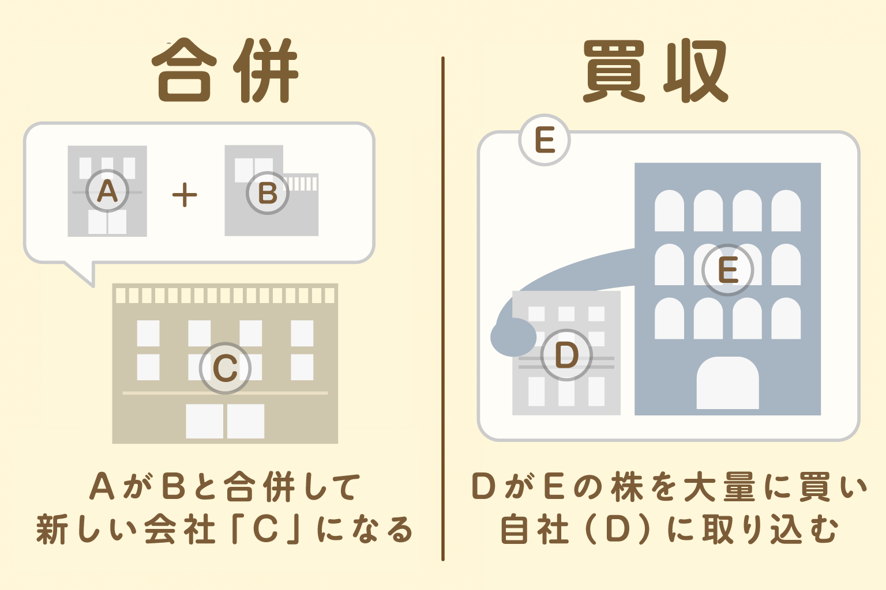

● M＆Aの種類

・合併：2つの会社がひとつになって、新しい会社としてスタートする
・買収：ある会社が、別の会社の株をたくさん買って、自分のグループに取り込む
M＆Aが起きる主な理由としては、以下が挙げられます。
・事業を広げたい（新しい分野に進出）
・競争力をつけたい（ライバル会社をグループに入れる）
・技術や人材を手に入れたい
● 有名なM＆Aの例
・ソフトバンクがアメリカの通信会社スプリントを買収
・トヨタとダイハツの完全子会社化
・アップルが小さなスタートアップ企業を買収し、新技術を開発
● M＆Aと株主の関係
1：株式交換・株式移転
・買収される会社の株が、買収した会社の株に自動的に交換される
2：TOB（株式公開買付け）
・買収する会社が「〇〇円で株を売ってください」と株主に呼びかけ、株主がOKすれば、その値段で売却される
● M＆Aで株価はどう動く？
＜買収される会社の株価＞
・買収価格が市場価格より高く提示されることが多く、株価はその水準に近づいて上がりやすい
・大きな会社に買収されることで、将来の業績向上が期待され、株価が上がることもある
＜買う会社の株価＞
・買収には多額の資金や借金が必要になり、株主がリスクを感じて一時的に株価が下がることがある
・統合のコストや失敗リスクが不安視される場合も株価が下がりやすい
・買収後に業績が伸びれば、長期的には株価が上がることもある
● まとめ
・M＆Aは会社どうしが合併したり、株を買ってグループ化すること
・株主は株式交換やTOBで株を手放したり、買収後の会社の株を持ち続けたりできる
・買収価格が高いと株価は上がりやすいが、リスクもある
・ニュースを見て、買収後の成長力や会社の計画まで考えて投資しよう
次回は「株主総会に参加してみよう！」というお話。実際の株主総会にはどうやって参加すればいいのか、どんなことが話されるのかお話します！